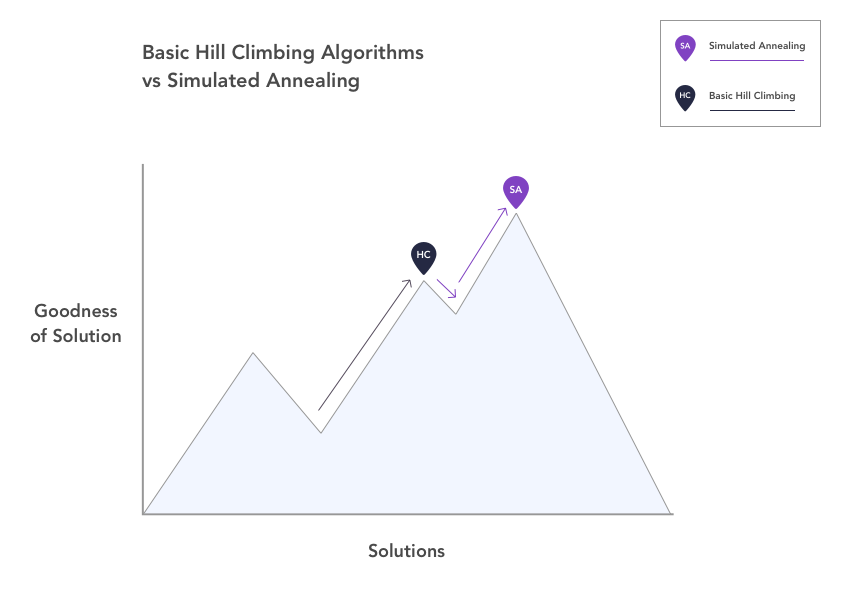
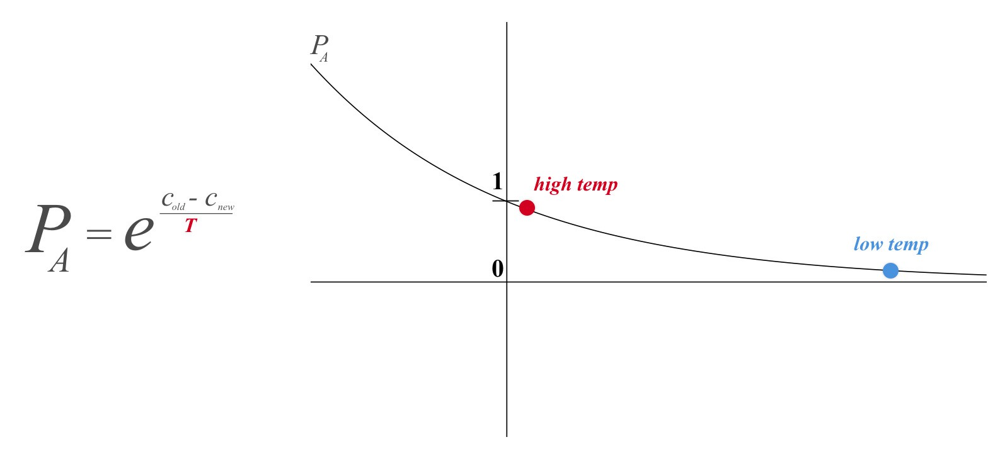

Anmol Anubhai, Gabriel Hughes, Daphne Liang, Thomas Nguyen
CSE 442 Fall 2017 Final Project
Simulated annealing is an algorithm used to find good (but not necessarily always perfect) solutions to optimization problems. It's main strength over other optimization algorithms such as hill climbing, genetic algorithms, and gradient descent is that it has a way of avoiding getting stuck at local optima (minima or maxima). The way simple optimization algorithms, like hill climbing, work is that the algorithm chooses a neighboring solution and if it is better than the current solution, it chooses that one. The downside of this behavior is that if the algorithm finds itself at a local optimum, it will never choose a worse solution even if worse solutions are the only way to arrive at the global optimum.

This plot represents the general basic behavior of simple hill climbing algorithms compared against the behavior of simulated annealing. We see that hill climbing results in the algorithm getting stuck at a local optimum because it cannot move downhill. On the other hand, simulated annealing has the ability to go downhill and escape that local optimum, eventually climbing up again to reach the global optimum. So what about simulated annealing allows this behavior?
The key differentiating factor between simulated annealing and other optimization algorithms is a variable called temperature, which is borrowed from the process of annealing in metalwork, from which the algorithm takes its name. In (non-simulated) annealing, metal is heated and cooled in order to change its physical properties. As the metal cools, its altered internal structure gradually becomes fixed until it takes on an entirely new shape. In simulated annealing, temperature determines the probability that the algorithm will choose a worse solution (or move downhill), knowing that there is a possibility that worse solution will eventually lead to a better one. When the temperature is high, the algorithm is more likely to choose a worse solution, i.e., its behavior is more varied, much like the atoms in heated metal. As the temperature cools, the algorithm is less likely to choose worse solutions, eventually choosing more and more good solutions (and fewer worse) in order to arrive at the nearest optimal solution. The plot to the right shows the equation for the acceptance probability and how temperature influences it. The probability is essentially e-x, where x is equal to the difference in cost between the algorithm's old solution (cold) and its new neighboring solution (cnew) divided by temperature. Because the difference in cost is always negative, we can see that as the temperature decreases, the probability of accepting a worse solution tends towards 0.

HillClimbingV3 from anmol anubhai on Vimeo.
This simulation shows the general basic behavior of the algorithm. Though a typical run makes many more random moves and takes longer, we can break down the behavior of the algorithm over time into three phases. In the beginning, when the temperature is high, the hill climber, representing simulated annealing, is able to explore freely because the probability that he will accept a worse solution, or lower altitude, is close to 1. As the temperature decreases, that probability decreases, so his behavior is characterized more by climbing, or accepting higher solutions. Finally, as the temperature approaches a low, the climber is very unlikely to move downhill, so he settles down at the nearest summit. In the simulation, the flag represents a possible neighboring solution, the highlighted terrain the neighborhood, and the climber's decision process is represented by the thought bubble.
TSPFinalV3 from anmol anubhai on Vimeo.
The Traveling Salesman Problem is a common use case for simulated annealing. Because of the algorithm's ability to temporarily accept worse solutions, or longer distances in this case, it's uniquely fit for finding optimal solutions to the problem. The following video shows how a pilot flying around the country might use simulated annealing to minimize the total distance traveled, and thus fuel burned. The paths adjust more at random in the beginning when the temperature is high and start taking on a similar shape near the end when the temperature is low. The following visualization allows you to create your own trip and watch the algorithm plan an optimal route.